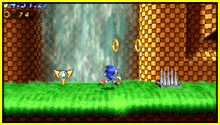
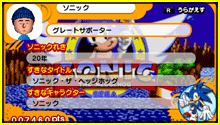

<div id="contents-feature">
	<section>
		<h1>青の特徴</h1>
		<h2>『ソニック ジェネレーションズ 青の冒険』だけのオリジナル要素を紹介!</h2>
		<div>
			<div class="bgP">
				<h3></h3>
				<p><a href="feature/image/screen_01.jpg" title="通信対戦" rel="feature"></a></p>
				<p>ふたりで遊べる通信対戦に対応！<br>ローカル通信対戦とインターネット対戦に対応し、近くのともだちや世界中のユーザーともアツい対戦が楽しめるぞ！</p>
			</div>
			<div class="bgP">
		<h3></h3>
				<p><a href="feature/image/screen_02.jpg" title="すれちがい通信" rel="feature"></a></p>
				<p>すれちがい通信をつかって、お互いのプロフィールカードを交換したり、ミッションを配布することができる。すれちがい通信によって遊べるようになるミッションの数はなんと100！ たくさん集めてコンプリートをめざそう！</p>
			</div>
			<div class="bgP">
			<h3></h3> 
				<p><a href="feature/image/screen_03.jpg" title="スペシャルステージ" rel="feature"></a></p>
				<p>ステージをクリアしていくと、カオスエメラルドを獲得できるスペシャルステージを選べるようになります。<br>
制限時間内に逃げるカオスエメラルドをつかまえましょう。</p>
			</div>
		</div>
	</section>
</div>